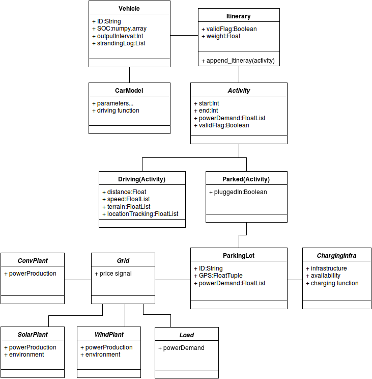

data structure¶
The data structure is a key aspect of the V2G-Sim project. It has been built to be intuitive and flexible. The object oriented structure allows one to easily study a large number of vehicles, and yet be able to easily access single vehicles.
In this project ‘vehicles’ is the central object containing a great deal of information on each vehicle. However, vehicles could also be part of a bigger picture as the grid side suggest (plants, and loads).
To resume the UML diagram below, a vehicle instance is attached to a car model (containing information on the car characteristics but also on the function to compute consumption results). Every car must have at least one itinerary which determine a set of activities through the day. Activities could be of two possible types, parked or driving, and they both have their own specific variables, however activities also have common parameters such as start date, end date and a power consumption. Driving activities contain distance traveled as supplementary information, furthermore terrain, GPS coordinates and speed can also be specified if needed. Parked activity contain a Boolean plugged-in parameter and an assignment to a location. Location have a type (“home”, “work”, ...) but also GPS coordinates, each location can be linked to a type of charging infrastructure. Charging infrastructure are useful to determine what kind of charger is available, furthermore it also contains the charging algorithm which will be applied.
A V2G-Sim project is basically a list of vehicles on a map of locations.
